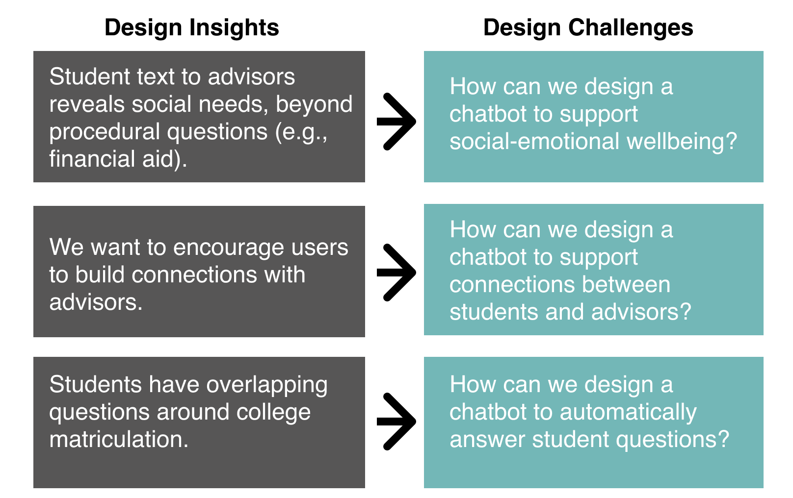
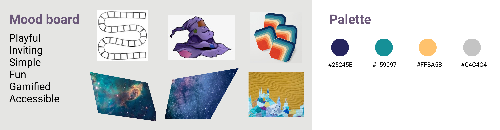
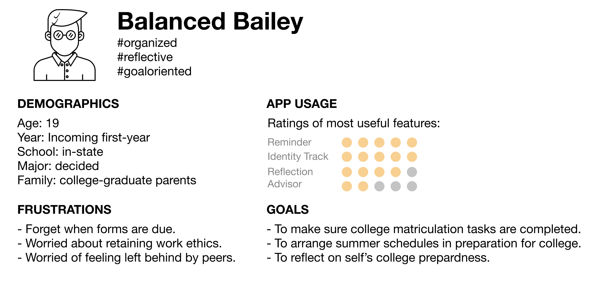

Advisor: Dr. June Ahn
Toolbox: Python, Excel, Figma, Qualtrics
Lilobot represents a partnership between UC Irvine, New York University, and CUNY Graduate Center

Objectives
Our goal in designing Lilo is to increase enrollment in college for high school graduates. Our question is: How can we design the app interface and interaction to prevent “summer melt”, where students who were already accepted to college decide not to enroll?
Through three rounds of pilot studies in Summers 2017, 2019, and 2020, the team gathered several data sources to inform our design that cater to students' social interactions and college identity. In particular, the team developed and collected:
- Surveys of student college identity
- Logs of interactions with human advisors in an online chat interface
- Logs of app interactions in a user study
- In-depth user interviews to create user profiles.
Analyses of these data sources helped us identify key features for improvement:
My Roles
• Lead the UX/UI development of a mobile chatbot interface to increase enrollment in college for high school graduates.
• Develop natural language processing pipelines to model conversation topics, predict FAQ intents, and detect sentiment to match students with relevant mentors.
• Conduct user experience research: protocol development, data collection, and analyses of qualitative (user diary, interaction log, interview, persona mapping) and quantitative measures (survey).
Design Inspiration
Insights
 Example conversational prompts and the dashboard interface to facilitate student reflection on their college identity
Example conversational prompts and the dashboard interface to facilitate student reflection on their college identity
Designing a chatbot to support social-emotional interactions
Prior work on college advising chatbots have focused on sending students informational nudges. Meanwhile, chatbots to support mental well-being often provide space for user reflection.
A design shift in Lilo is to combine these features, to provide students space to explore their social well-being in regards to college-going experiences. We worked with the interaction designer to create regular check-ins (surveys and conversational prompts) for students to reflect on multiple aspects of college-going experience.
Feedback from our latest pilot, where we interviewed participants about Lilo's different features, suggests that the designed prompts:
- Are comprehensive of college-going experience
- Are seemlessly embedded in the interactions
- Provide space for self-introspection
Supporting connection between students and advisors
Another design challenge, however, is that automated FAQs and open-ended responses may not satisfactorily understand and respond to complex social emotional needs.
Thus, we also engaged human advisors, who may have shared experiences with students around a certain topic.
To match students with advisors, we created a topic modeling and sentiment analysis feature, to automatically detect the topics and emotions in student text. This information will also provide advisors with the contexts for students' textual request.

Here, Lilo correctly identifies the sentiment in student text to inform the advisors. The chatbot also returns the right intent (tuition) for student questions.
Automating informational search
We observed from our pilot studies that students had shared concerns about several topics, such as tuition deposit, housing, or class registration.
To resolve these common questions in real time, we leveraged natural language processing to create a FAQ pipeline. We scraped the university sites and used pre-trained language models (such as GPT-2) to:
- Automatically identify the intent in user questions
- Reply with the appropriate response
Uncovering nuances in user profiles
We are working to create user personas from triangulating multiple data sources. This persona mapping helps us to refine our interaction designs to adapt to varying user needs.
Example persona: for students like Bailey, we would strive for a more balanced experience between task and conversation-oriented interactions.